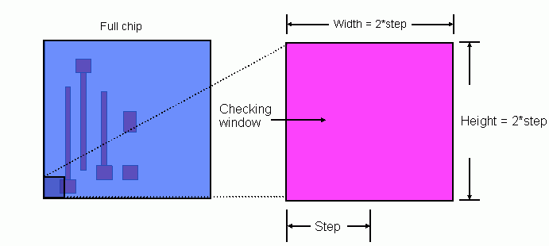

|
 |
 |
||||||
|
|
|
||||||
The built-in layer constraint definition oacMinDensity specifies a percentage value from 0 to 100 that represents the minimum percentage of an area of the design that must be filled with shapes on a particular layer. Density constraints are generally represented in two ways: the minimum density for an area that encompasses the entire design, or a window-based minimum density where the area of concern is a window that is moved across the design to prevent localized problems.
The built-in layer constraint definition oacMaxDensity is used in conjunction with the oacMinDensity constraint to make sure that the metal density for a design is neither too dense nor too sparse.
| Constraint type: | oaLayerConstraint |
| Value types: | oaFltValue, oaIntFltTblValue |
| Database types: | oaDesign, oaTech |
| Object types: | oaAppObject |
The following value types are supported by this constraint:
This value represents the miniimum density percentage required for one layer over the entire design.
Units: Percent
The oaIntFltTblValue where the lookup key ("step") represents the step size and the value represents the density percentage.
Checking density using a stepped value requires that you start in a corner of the design and validate the percentage for an area (window) whose height and width are each twice the step size. You then continue stepping across the design incrementally, moving your window of concern by the step size, each time validating that the density percentage in the window exceeds the minimum value required.
Units: Percent
The following parameters are supported by this constraint:
| Name | Value Type | Units | Default | Description |
|---|---|---|---|---|
| windowStepSize oacWindowStepSizeConstraintParamType |
oaInt1DTblValue | DBU | None (only valid for value types: oaIntFltTblValue) |
This parameter holds a table for different window and step sizes. The value corresponding to the step size is considered as the window size in database units |

The primary reason for metal density rules is to eliminate improper etching between geometries. If geometries are too far apart, the chemical mechanical polishing (CMP) process used to planarize the oxide between the layers of metal can quickly overcut, or overetch, the metal, creating divots in areas without enough metal.
Copyright 2002 - 2010 Cadence Design Systems, Inc.
All rights reserved.